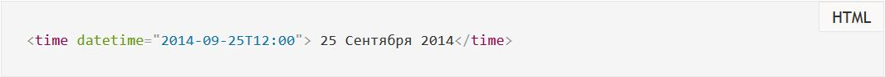

| HTML5 |
| 1.11. Семантические элементы HTML5 |
| 1.11.1. Элемент документа |
| 1.11.2. ... |
| 1.11.3. ... |
| 1.11.4. ... |
1.11. Семантические элементы HTML5
Опубликовано: 26 октября 2014 Обновлено: 18 марта 2020
Семантические элементы HTML5 доступно описывают свой смысл или назначение как для браузеров,
так и для веб-разработчиков. Стандарт HTML5 предоставил новые элементы для структурирования, группировки контента и разметки текстового содержимого. Новые семантические элементы позволили улучшить структуру веб-страницы, добавив смысловое значение заключенному в них содержимому (было <div id="header">, стало <header>). Для отображения внешнего вида элементов не задано никаких правил, поэтому элементы можно стилизовать по своему усмотрению. Для всех элементов доступны глобальные атрибуты. Согласно спецификации HTML5 каждый элемент принадлежит к определенной (ноль или более) категории. Каждая из них группирует элементы со схожими характеристиками. Выделяют следующие общие категории:
Описание HTML5-элементов
1.Элемент <time>
Категории контента: потоковое содержимое, текстовое содержимое. Чтобы дата могла считываться автоматически, она должна быть в формате <YYYY-MM-DD>. Время, которое также может указываться, задается в формате <HH:MM> с добавлением разделяющего префикса <T> (time): 
2. Элемент <mark>
Категории контента: потоковое содержимое, текстовое содержимое.
3. Элемент <bdi>
Категории контента: потоковое содержимое, текстовое содержимое. 4. Элемент <wbr>
Категории контента: потоковое содержимое, текстовое содержимое. 5. Элементы для описания Восточно-Азиатских символов
Категории контента: потоковое содержимое, текстовое содержимое.
Элементы <rb>, <rt>, <rtc> и
<rp> не относятся ни к одной категории контента. Элемент <rt> выводит аннотацию к тексту сверху или снизу над ним. Элемент <rtc> отмечает вложенный в него текст как дополнительную аннотацию. Элемент <rp> выводит альтернативный текст в случае если браузер не поддерживает элемент <ruby>. |